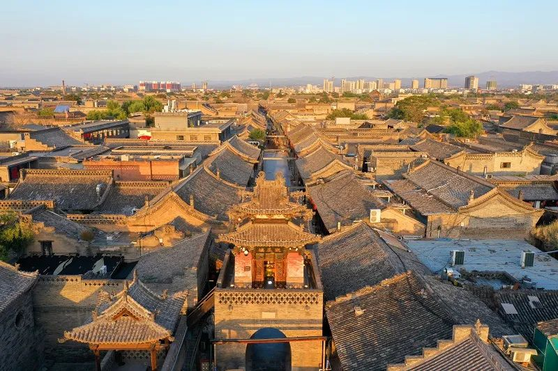
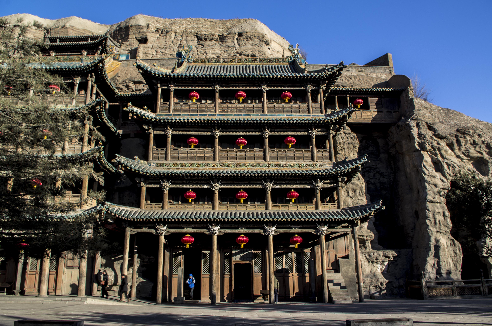
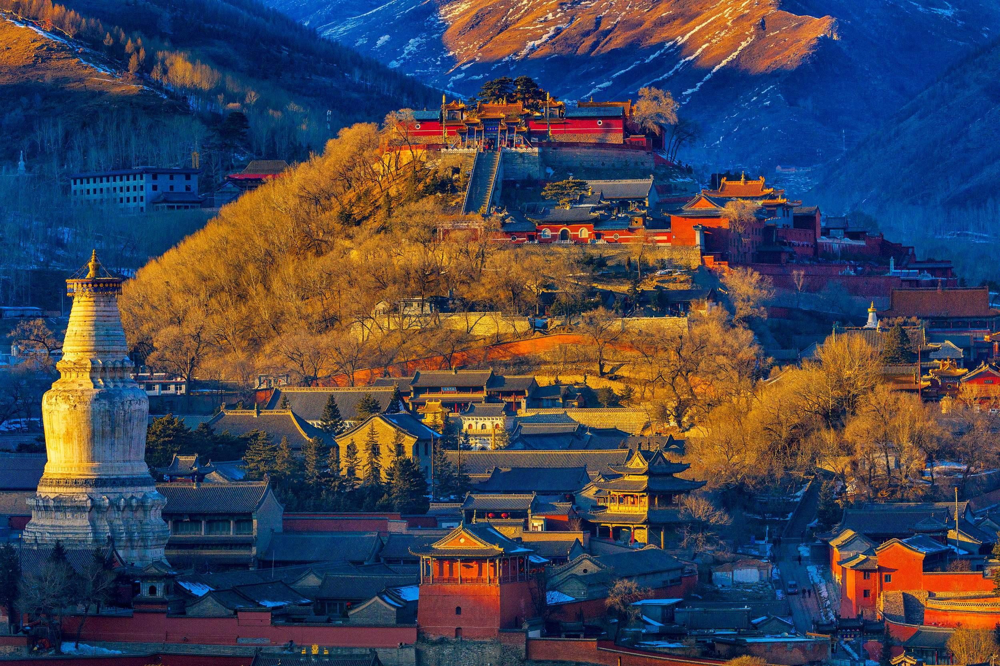

必打卡的名胜古迹

🏯 平遥古城
保存最完好的四大古城之一，晋商文化的发源地。走在青石板路上，仿佛穿越回明清。

🗿 云冈石窟
世界文化遗产，北魏时期的佛教艺术巅峰。石窟内的佛像雕刻精美绝伦，震撼人心。

⛰️ 五台山
中国佛教四大名山之首，不仅文化底蕴深厚，夏季更是绝佳的避暑胜地。

保存最完好的四大古城之一，晋商文化的发源地。走在青石板路上，仿佛穿越回明清。

世界文化遗产，北魏时期的佛教艺术巅峰。石窟内的佛像雕刻精美绝伦，震撼人心。

中国佛教四大名山之首，不仅文化底蕴深厚，夏季更是绝佳的避暑胜地。